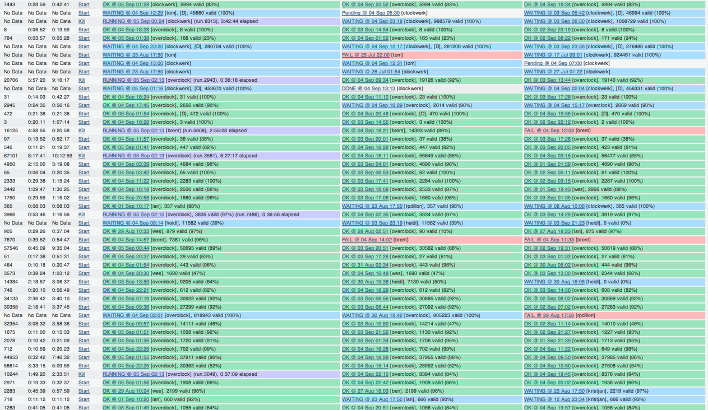
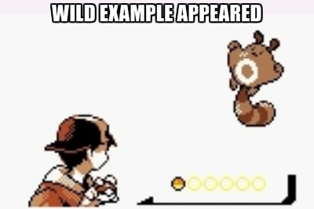

- Kristján Pétursson
- k@apartmentlist.com
 kristjan
kristjan
How T-Rex Rules the Dynos
We import data
Lots of it

Worker Dynos
- Constantly up, mostly idle
- Don't know which picked up the task
- Deploy restarts them
- Heroku restarts them
Heroku Run API
$ heroku run rake do:something
- Dynos runs its task, then exits
- Known process ID
- Don't restart on deploy

Victory
- Saved 70% of our Heroku bill
- Debugging
- Deploy whenever we want